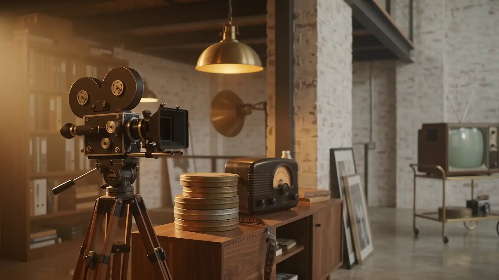
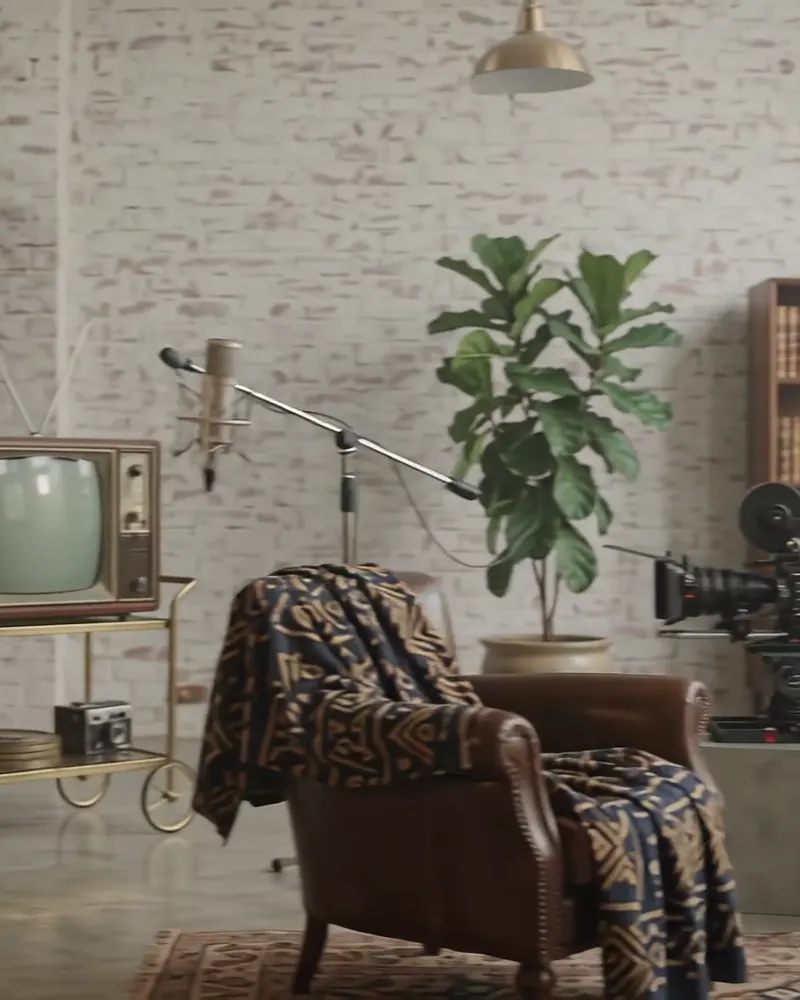

Film
Feature films and documentaries, developed in Lusaka and made for festivals, cinemas and streaming.
Enquire about film
An independent production company making film, television, audio, digital and publishing for global audiences.
Feature films and documentaries, developed in Lusaka and made for festivals, cinemas and streaming.
Enquire about filmSeries and specials written, produced and delivered to broadcasters and platforms worldwide.
Enquire about televisionPodcasts, radio documentaries and sound design, recorded with the care we give picture.
Enquire about audioShort-form series and branded content built for the screens people actually watch.
Enquire about digitalBooks and anthologies that carry our stories onto the page, from first draft to print.
Enquire about publishingStoryline Studios is an independent production company in Lusaka, Zambia. We develop and produce original work across film, television, audio, digital media and publishing, for audiences around the world.
We keep the team small and the slate focused, so every project has a writer, a producer and a director who stay with it from first draft to release.

The cameras and microphones in our films are old on purpose. We borrow the habits of the film era, and deliver to the screens of today.
We rehearse, light properly and get it right on the day. Fewer takes, more care, and a set that stays calm.
Everything leaves the studio to broadcaster and platform specs, with subtitles in the languages your audience speaks.
We develop and own our originals in Lusaka, and co-produce on fair terms with partners who come in early.
One recent project from each format. Titles and descriptions are invented, and the images are AI-generated for this prototype.
Every project follows the same four steps, with the same small team from start to finish.
We shape the idea with you: treatment, script or outline, budget and a delivery plan before a camera rolls.
One producer leads a small crew across Zambia and the region, for shoots, recording sessions and writing rooms.
Edit, grade, sound mix, subtitles and quality control, delivered to broadcaster and platform specifications.
Festival and broadcast strategy, distribution, print runs, and the trailers and artwork your launch needs.
Most of our partners are outside Zambia. They come to us for stories they cannot get anywhere else.
Broadcasters, streamers, festivals and funds looking for original stories from southern Africa, and a producer who can deliver them.
Slate, packaging, co-production
Campaign films, branded series, audio and print for organisations with something to say and an audience to reach.
Commissioned work, campaigns
We read submissions and pair new voices with producers. Send a treatment, a sample chapter or a demo reel.
Submissions, development
Short writing from the people who make the work. Titles are invented for this prototype.
What twelve writers and a boat taught us while making Letters from the Zambezi.
How we adapt humour across seven Zambian languages and English, line by line.
On a hospital set at midnight, rehearsal is what let Night Shift finish before the first bus.
Yes. Most of our commissioners and co-producers are abroad. We work across time zones, deliver to international specifications and invoice in major currencies.
From a sixty-second digital piece to a multi-episode series or a full-length book. After a short call we scope the work, the crew and the schedule.
We prefer to. Early conversations about story, budget and delivery save time later, and co-production terms are simpler when they are set at the start.
English and the seven main Zambian languages. Subtitles and translations are finished by native speakers, not by software alone.
Use the form below. A few lines about the project and where it needs to go is enough, and we reply within three working days.
Tell us about the project and where it needs to go. We read every message.
hello@storylinestudios.example
Lusaka, Zambia
Three working days